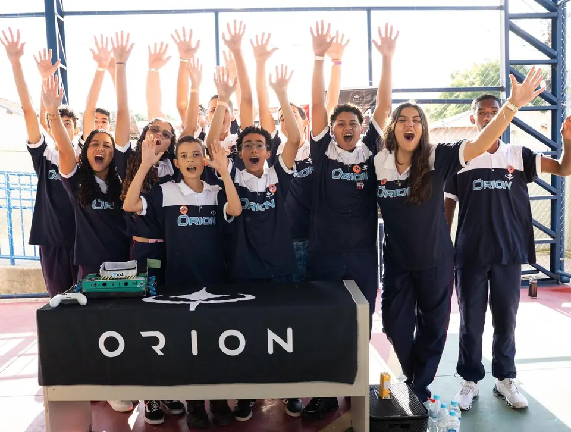
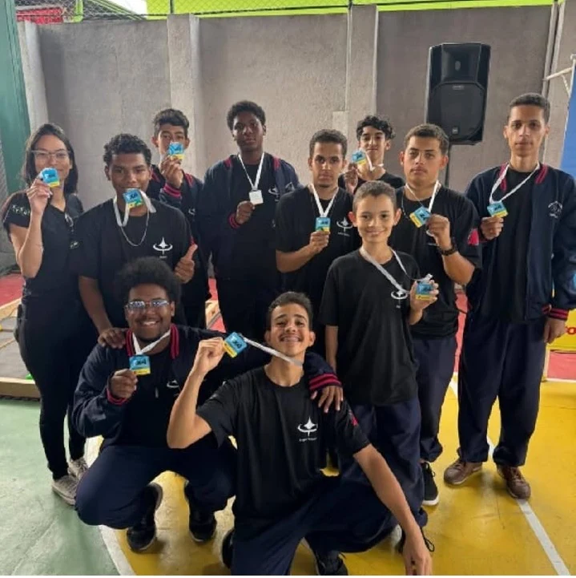
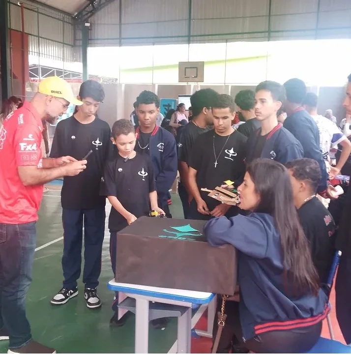
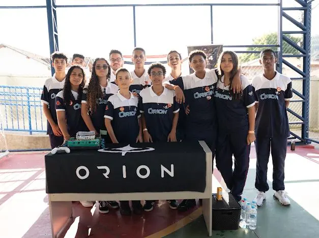
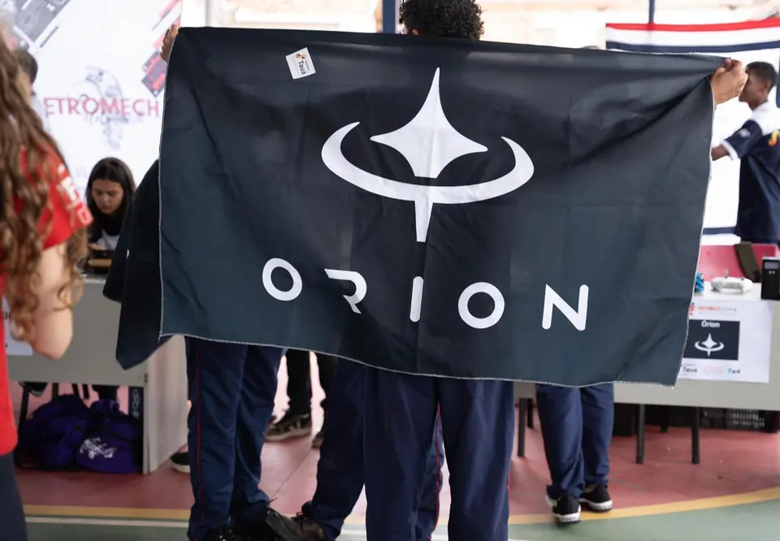
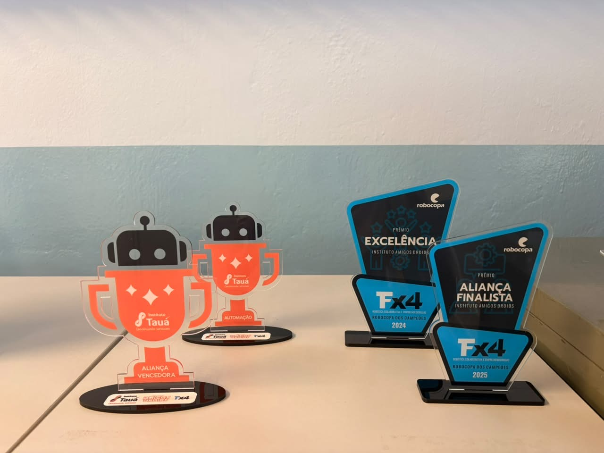
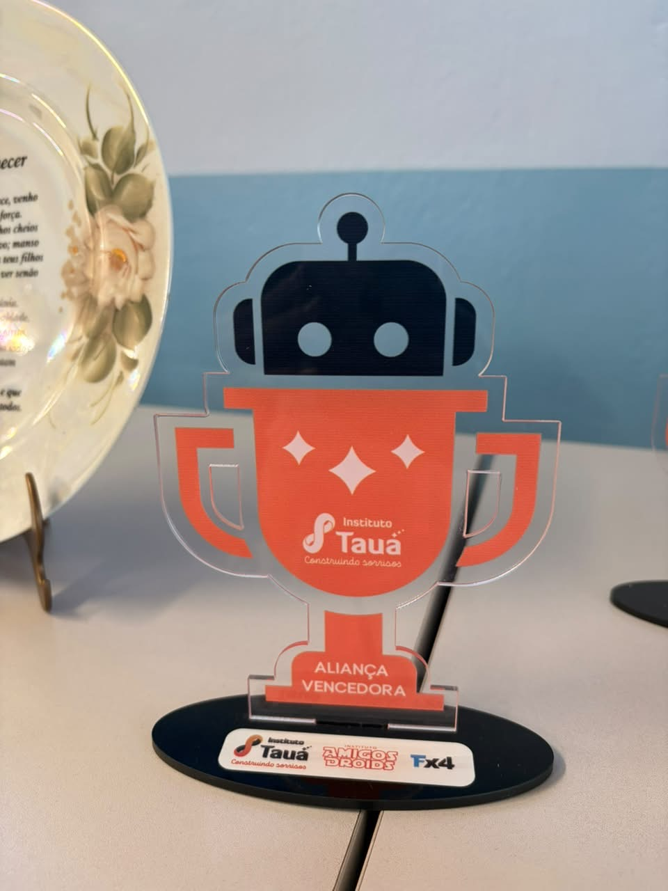
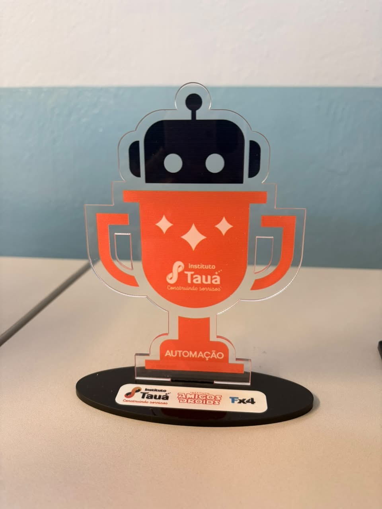
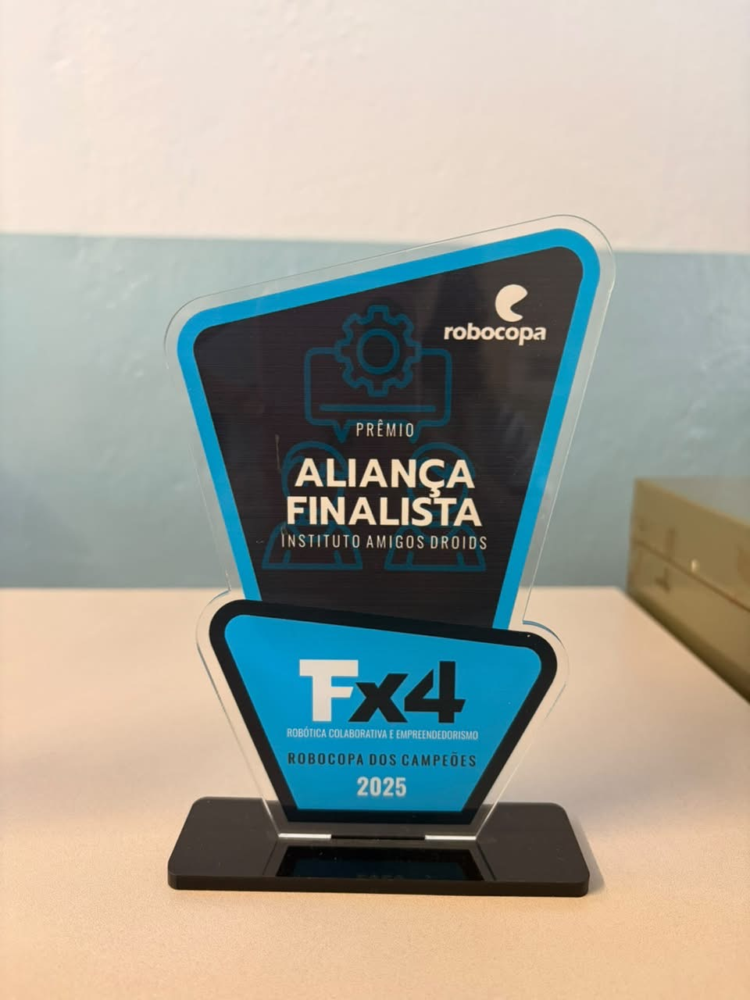
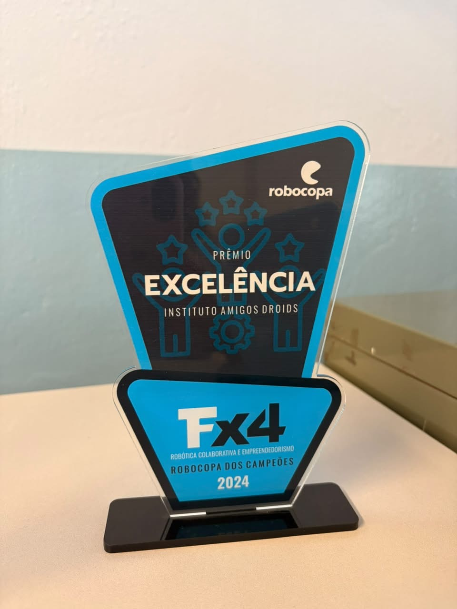

Pensar
Observar o problema antes de correr para a solução.
CAETÉ · MINAS GERAIS · BRASIL
Ideias que saem do papel, projetos que ganham forma e uma equipe que aprende, testa, erra, melhora e volta ainda mais preparada.

01 / NOSSO JEITO
A Órion é feita de curiosidade, colaboração e vontade de transformar uma ideia em algo real. O resultado aparece no projeto, mas começa muito antes: na pergunta certa.
Observar o problema antes de correr para a solução.
Construir, falhar rápido, aprender e ajustar o caminho.
Somar experiências e voltar melhor para o próximo desafio.
02 / TEMPORADAS
Duas formações, diferentes momentos e a mesma vontade de construir algo maior em equipe.
PRIMEIRA TEMPORADA
Foi aqui que vieram os primeiros desafios, as primeiras soluções improvisadas, os primeiros erros e as primeiras conquistas que definiram o jeito Órion de trabalhar.




SEGUNDA TEMPORADA
A nova formação carrega tudo o que foi aprendido antes e abre espaço para novas perspectivas, novas soluções e novos capítulos da história.
Acompanhe os bastidores no TikTok“Construir melhor começa por construir juntos.”
03 / CONQUISTAS
Cada troféu representa um processo: estudo, tentativa, ajuste, parceria e trabalho de equipe.

Uma visão geral dos reconhecimentos construídos ao longo da caminhada.

Parceria, estratégia e trabalho coletivo reconhecidos em competição.

Reconhecimento pela aplicação prática de tecnologia e desenvolvimento.

Presença entre os finalistas da Robocopa dos Campeões de 2025.

Um dos marcos que ajudaram a consolidar a trajetória da equipe.
04 / PARCEIROS
A Órion cresce com pessoas e marcas que acreditam em educação, tecnologia e no potencial de uma equipe que aprende construindo.
Espaço destinado aos patrocinadores oficiais da temporada.
Profissionais, instituições e iniciativas que ajudam a equipe a ir além.
Faça parte dos próximos projetos, eventos e conquistas da Equipe Órion.
05 / CONTATO
Conheça a equipe, acompanhe os bastidores ou converse sobre parceria e colaboração.